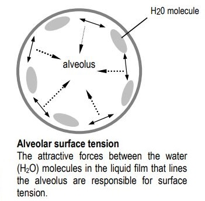
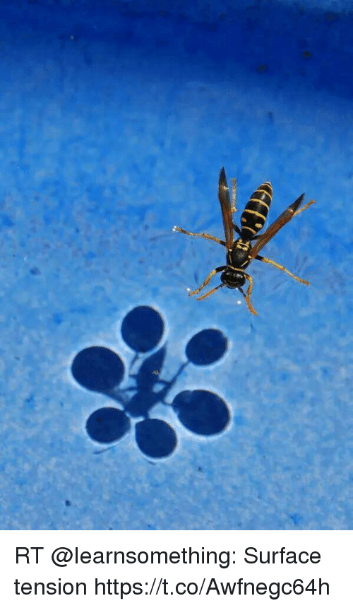

- Thin film of liquid (water) lines alveoli.
- Surface tension (T)
- Reflects the work needed to surface area of a liquid at an interface.
- Law of Laplace – P in alveoli is directly proportional to surface tension; and inversely proportional to radius of alveoli.
- T is the same for same interface.
- For the same T, smaller alveoli have higher P to collapse than larger alveoli.
- r=2 (P=T) vs. r=1 (P=2T) collapse of smaller alveoli
- P compliance takes more energy to expand.
- What helps keep surface tension from collapsing our alveoli?
